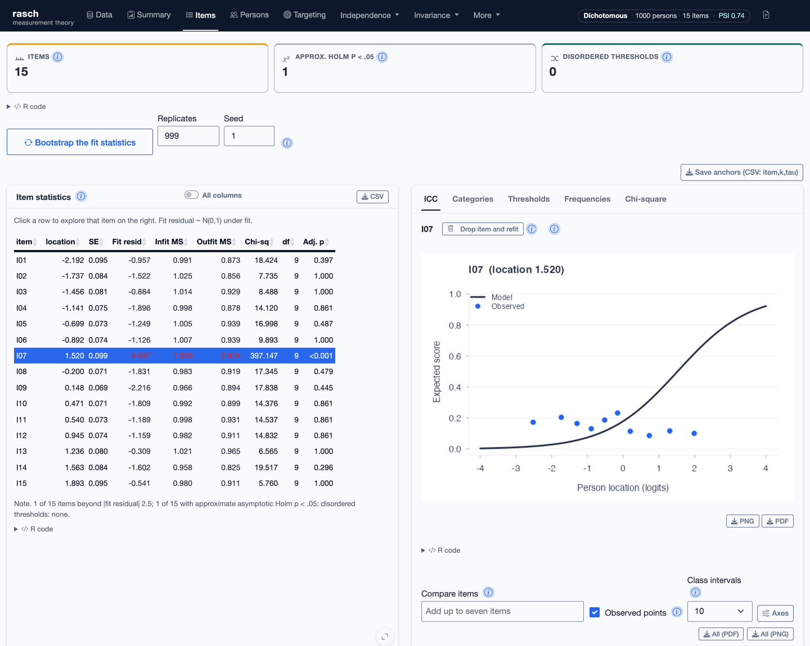

rasch implements Rasch Measurement Theory in R. It provides a common set of models and diagnostics for constructing measurement scales and examining whether the requirements of the Rasch model are supported by the data.
The package is organised around two defining properties of Rasch measurement:
- Sufficiency: the total score on the relevant items carries all the information in the data about a person’s measure (and the item margins all the information about the items) – the property that allows person and item parameters to be separated in conditional estimation.
- Invariance: within a specified frame of reference, comparisons between persons do not depend on which items are used, and comparisons between items do not depend on which persons respond – Rasch’s criterion of invariant comparison, or specific objectivity.
These are requirements the data must meet for measurement, not assumptions taken on trust. The package therefore treats estimation and the assessment of these requirements as parts of the same analysis: it provides item and person estimates, and with them the fit, dimensionality, local dependence and differential item functioning analyses that examine whether the data sustain invariant comparisons – differential item functioning, for example, is precisely a violation of invariance across person groups.
Documentation: https://drjoshmcgrane.github.io/rasch/
Point-and-click Shiny app
rasch includes a complete graphical interface for analysts who do not normally work in R. After the package is installed, launch it with one command:
rasch::run_app()The app guides the user through importing data, assigning item, person, group, rater and comparison roles, selecting the appropriate model, fitting the analysis, and examining the resulting diagnostics. Tables, plots and reports can be downloaded directly. The corresponding R call is shown alongside each analysis, so the graphical workflow remains transparent and reproducible.
R is needed to install the package and launch the app, but the analysis itself can then be completed through the point-and-click interface without writing R code.

Models
The model suite includes:
- the dichotomous Rasch model;
- the partial credit model;
- the rating scale model;
- many-facet Rasch models;
- the extended frame of reference model; and
- Bradley–Terry–Luce models for dichotomous and graded paired comparisons.
The standard item models use pairwise conditional estimation, with person measurement based on weighted likelihood. Anchored estimation is available for equating. Planned missingness and linked designs are supported where the observed response graph identifies a common scale. Informative response missingness is not made ignorable by the estimator and should be examined separately.
What can be examined
rasch provides functions for:
- item, person and category fit;
- threshold functioning and category ordering;
- targeting, reliability and test information;
- residual dimensionality and local response dependence;
- differential item functioning over one or more person factors;
- between-person and within-person factor designs;
- DIF magnitude, planned contrasts and item splitting;
- common-item equating and anchored calibration;
- repeated-measures data in racked or stacked form;
- multiple-choice distractor analysis;
- simulation and parameter recovery; and
- export of tables, plots and HTML reports.
Where the data do not identify an estimate, the fitting functions stop or withhold the affected result and provide an explanatory note.
Installation
Install the released version from CRAN:
install.packages("rasch")Install the development version from GitHub:
# install.packages("remotes")
remotes::install_github("drjoshmcgrane/rasch")The analysis functions depend only on base and recommended R packages. The interactive interface uses packages listed under Suggests.
Quick start
library(rasch)
# Example data with a person factor for DIF analysis
d <- simulate_rasch(
n_persons = 500,
n_items = 10,
n_groups = 2,
seed = 1
)
fit <- rasch(d, model = "PCM", id = "id", factors = "group")
summary(fit)
fit$items
fit$person
plot_pimap(fit)
plot_icc(fit, "I05", group = "group")
dif_anova(fit)
dimensionality_test(fit)
residual_correlations(fit)
score_table(fit)
save_outputs(fit, "rasch-results")For short scales the dimensionality test may deliberately return an indeterminate result: each opposed subtest needs at least 15 score points. Residual-correlation tables are always available, but binary adjusted-Q3 flags require an analyst-supplied heuristic threshold.
For an observed data frame, supply item columns together with optional ID and person-factor columns:
Other model families
# Many-facet Rasch model
mf <- rasch_mfrm(
ratings,
person = "person",
item = "criterion",
score = "score",
facets = "rater"
)
# Extended frame of reference model
ef <- rasch_efrm(
responses,
item_sets = list(numeracy = numeracy_items,
literacy = literacy_items),
groups = "group"
)
# Paired comparisons
bt <- btl(
comparisons,
object_a = "left",
object_b = "right",
winner = "preferred",
judge = "judge"
)The function reference documents the input structures, identification requirements and output for each model.
Documentation and validation
The package documentation gives the estimator definitions, standard errors, identification checks and diagnostic conventions used by each function. The article Simulation-based checks of Rasch diagnostics shows how known model departures can be introduced and assessed.
The test suite includes parameter-recovery, null-calibration, adversarial identification and cross-package comparison tests. Current CRAN check results are available from the CRAN package page.
Citation
To cite the rasch package in publications:
McGrane, J. (2026). rasch: Models and Diagnostics for Rasch Measurement Theory. R package version 1.14.1. https://CRAN.R-project.org/package=rasch
@Manual{rasch,
title = {rasch: Models and Diagnostics for Rasch Measurement Theory},
author = {Josh McGrane},
year = {2026},
note = {R package version 1.14.1},
url = {https://CRAN.R-project.org/package=rasch},
}citation("rasch") reproduces this from within R.